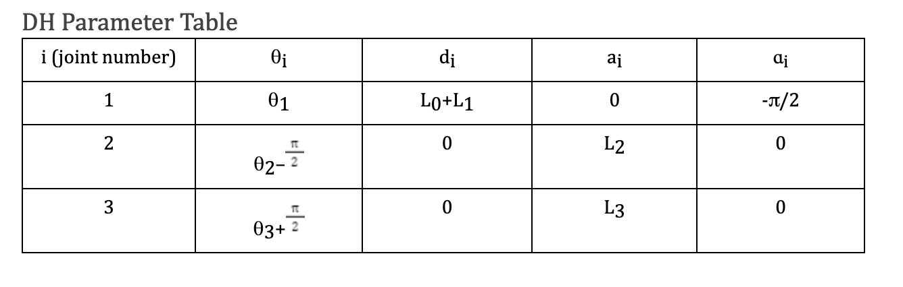
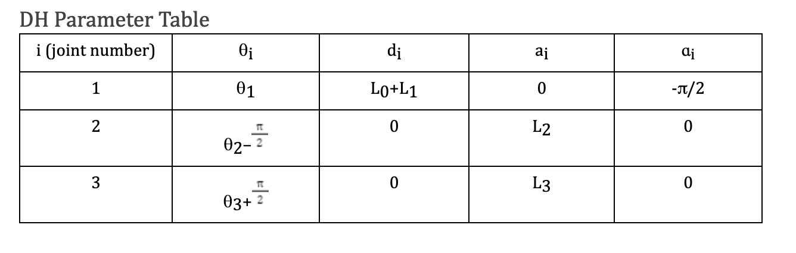

Manipulation
Description


This has by far been one of my favorite proejects. In this project, we set up the toolchain for the robot arm, worked with MATLAB for joint commands, applied Forward and Inverse Kinematics, and implemented velocity kinematics for robot control. In the final project, we integrate these concepts to create a robotic pick-and-place sorting system. This involves using computer vision for target identification, localization, robot movement, grabbing, and sorting. The project encourages a creative and thoughtful approach, emphasizing deliberate planning, experimentation, and documentation of the development and integration process.
Execution

In this project, we used a serial manipulator that consists of three degrees of freedom (DoF) controlled by three servo motors that rotate to control three rotational joins, as seen in Figure 1. In addition, the serial robot arm has a small gripper servo that allows the arm to grab objects. The gripper position, or end-effector position, can be modified by adjusting the three servo motor positions at the joints with time interpolation enabled or disabled.
We began by finding the Forward using the DH-method for our robot arm.
The DH Method is listed as follows:
Based on the arm configuration shown in the hand drawn figure, we used the following steps of the D-H method
for deriving the forward kinematics for the robotic arm:
Assign the local reference frame to each joint following a set of rules:
- Assign the zi axes
- Locate the origin oi
- Assign the xi
- Assign the right-handed coordinate frames
- Determine the D-H parameters for each joint: θi, di, ai, ɑi
- Form the homogeneous transformation matrices Ai
- Form the forward kinematics transformation matrix T
The DH parameters are necessary to represent the transformation undergone from frame to frame. For instance, the DH method states that by rotating by an angle θ, Translating along the z-axis by d units, translating along the x-axis by a-units, and rotating along the x-axis by ɑ degrees, you can obtain the transformation matrix for a frame i-1 to i. The transformation matrices are represented by the letter A.
Therefore, to find the transformation matrices between frames we must find the DH parameters and evaluate them using the A matrix. We will find three pairs of DH parameters since there are as many DH parameter sets as there are joints. To find the parameters, we follow the rules of the DH parameters:
 

Step 3: Find Transformation Matrices Next, we found each transformation matrix between each joint frame. Due to the size of the final transformation matrix Tn0 we will omit it. However, as an exercise to the reader, multiply these matrices and use matlab to verify your calculations. We used matlab and solved for the final matrix symbolically. Then, we substituted for each joint variable and evaluated it.

Afterwards we calculated the inverse kinematics for our 3-DOF arm.

Theta 1 was easy to calculate. Theta 1 is simply the angle made by the position of the end effector projected on the x-y plane of the base joint. However, the following angles required additional geometric calculations using the law of cosines.
Lastly, we had to implement computer vision. To detect colored objects and segment them. We then found the centroid of blobs from our segmented images and updated the locations of the colored objects.
Our image processing corrects for the distortion of the point in the checkerboard frame created by the camera. This correction is performed by calculating some offsets to undistort the balls centroid location in the world frame. We calculate the X and Y offset. The X offset is calculated by projecting the ball onto the XZ plane, as seen in Figure X above, and using similar triangles to determine where the ball actually lies on the X axis. We then project the ball onto the XY plane to determine y offsets. The figure, shows our hand calculations to derive these offsets.

What did I learn?
This project was by far one of the most rewarding projects I have ever worked on. I learned about Forward, Inverse, and Velocity Kinematics, Singularities, i.e configurations that have near infinite solutions making the robot stuck. In addition, I learned computer vision techniques to extract information from images and videos. This project proved to be a fun challenge. Lastly, I learned more about working on a team and sharing code using git and GitHub. My team had a great workflow and dynamic to create a fun working environment. Checkout the code for this project here!